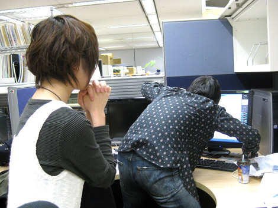

『皆さまからのメールをご紹介』
2009年01月22日
こんにちは。ヨシノです。
マツバラが生牡蠣にあたって倒れてしまったので
本日はヨシノ1人でお送り致します。
皆さまも生牡蠣にはどうぞご注意を。
今回は、橋本さんの席を荒ら…・・・いえ、リポートする予定でしたが
予定を変更しまして
当ブログに寄せられました
皆さまからのメールを紹介していきまーす。
PN.RJANKAさんからのコメント
Mバラさん、ドンマイドンマイ。
『見慣れている』と『描き慣れている』は別物ですから。
・・・ウェアホッグ、なかなかいい味ですよ。可愛くて。
PN.ふにゃっくさんからのコメント
私はMバラさんの絵可愛くて大好きですよｖ
どこか愛嬌があってつい見入っちゃいます（笑）
PN.Yasuさんからのコメント
キャラクターうろ覚えイラスト対決でのマツバラさんの絵
あえて画伯と呼ばせて頂きますm（＿ ＿）m
前回の更新のあと
マツバラへの励ましのコメントも
たくさん頂きました。
マツバラ、皆さまからの慈愛あふれるコメントで
早く元気になってね～。
次は、ご質問のメールです。
PN.▼▼さんからの質問
wii版とPS3,Xbox版の違いについて詳しく教えていただきたいです。
「Wii版」と「PlayStation3/XBOX360版」では
ストーリーやキャラクター、
遊びのコンセプトは同じです。
違うところは、出現する国の数と、
全アクションステージの内容です。
詳細は、これから
『SWA』公式サイトで発表されていきますので、チェックしてください！
同じ『SWA』でも
全く違うステージを遊ぶことができますので……
両方買って頂けると
『SWA』を2倍遊び倒すことができます！
「PlayStation3/XBOX360版」の発売は2月19日。
ついに、発売まで一ヶ月をきりました。
皆さま、「Wii」版で遊びつつ、今しばらくお待ちくださいませ。
……では最後に
最近一番熱かった、
「PN.ダリオ」さんからのメールを紹介いたします。
ダリオさんは、転校先で
「仲良くなりたい！」と思った人がいたようです。
その人がたまたまソニックファンで、
ダリオさんは、今まであまり興味のなかった
「ソニック」を遊ぶようになったそうです。
PN.ダリオさんからのコメント
(中略)
その人は、ソニックが大好きでした。
僕は、その人と、得意のゲームで仲良くなろうと思いました。それで僕は必死にソニックシリーズについて調べました。
すると僕は、自然とソニックをかっこいいと思うようになり、
クリスマスプレゼントは迷うことなく「ソニック ワールドアドベンチャー」にしました。
そして僕はそれにとっても感動しました！きれいなステージ！
爽快なアクション！
それをより楽しくする音楽！
そしてオマケ要素も！
ソニックはすごいですね！
「ソニック」が
仲良くなりたい人との架け橋になるなんて……
そして「ソニック」を好きになってもらえるなんて……
なんとステキなことでしょう！
このメールを頂いたとき
嬉しくなっちゃったので、
思わず「Wii」版ディレクターの長原さんにお見せしました。
すると……
長原さん：マジで！？ すげー嬉しい！！

↑メールにくいつく長原さんと、喜ぶヨシノ
……と、大喜びのご様子。
ダリオさん、ありがとうございました！
当ブログでは引き続き
皆さまのご意見やご要望を募集しておりますです！
……うーん。
私1人じゃ、やっぱり寂しいなあ。
画面も、やたらピンクになっちゃったし。
次回はマツバラが復活していることを祈りつつ、
今回は失礼致します～。
日時: 2009年01月22日 12:30 | パーマリンク


 ソニックを愛する、元気な『SWA』2年目プランナー。
ソニックを愛する、元気な『SWA』2年目プランナー。 マイペースな『SWA』2年目プランナー。
マイペースな『SWA』2年目プランナー。
 ご意見・ご要望はこちら
ご意見・ご要望はこちら RSS
RSS